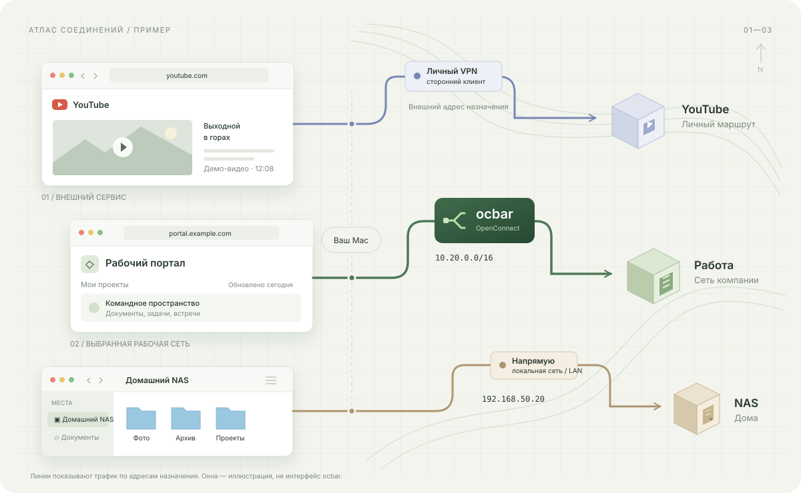
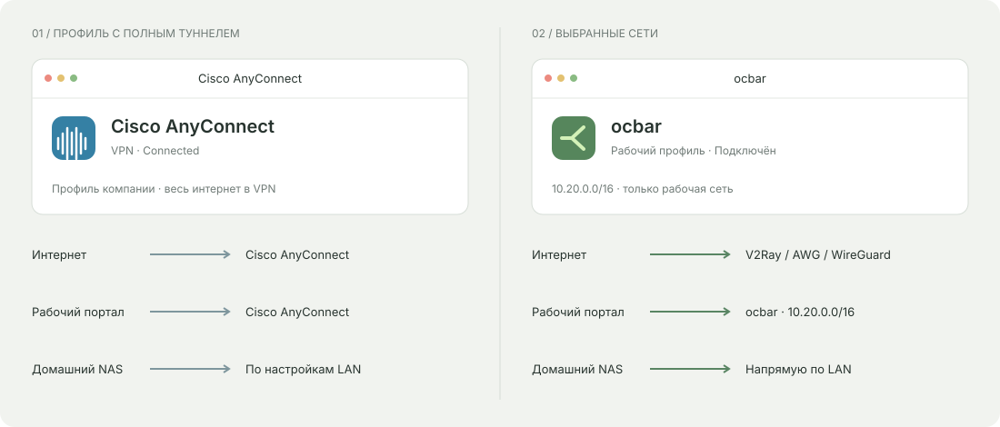

Рабочая сеть.
Ваши маршруты.
Работа — через ocbar.
Личное и домашнее — своим путём.

Из №3 берём понятные маршруты. Из №5 — крупный первый экран и контраст. Знак свитча сохраняем, выбираем его цвет.
Выбран лайм. Форма свитча одинакова во всех вариантах.
Работа — через ocbar.
Личное и домашнее — своим путём.

Работа — через ocbar.
Личное и домашнее — своим путём.
Так сохраняется характер №5, а схема из №3 остаётся лёгкой для чтения. Акцент — у знака, кнопок и коротких выделений. Рабочий путь остаётся зелёным, личный — сиреневым, LAN — песочным: цвет бренда не меняет смысл линий.
Это пример сочетания для выбора. Цвет реального приложения и опубликованный сайт пока не изменены.

Иллюстрация конфигураций. Cisco AnyConnect также поддерживает split tunneling. V2Ray, AmneziaWG и WireGuard показаны как примеры отдельно настраиваемого личного подключения.